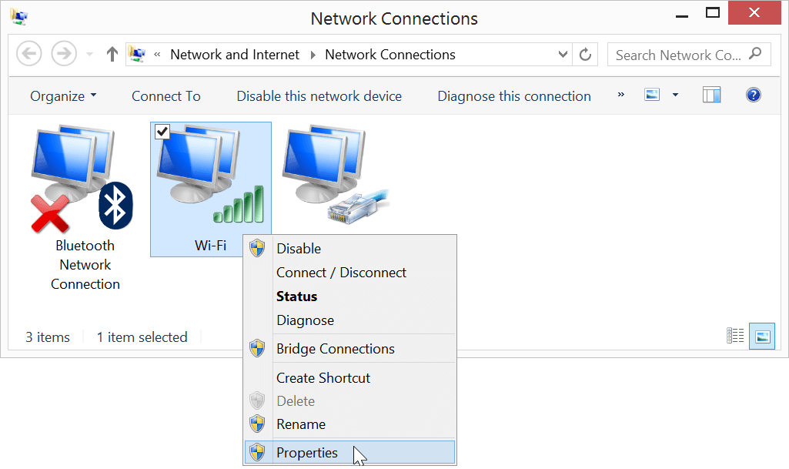
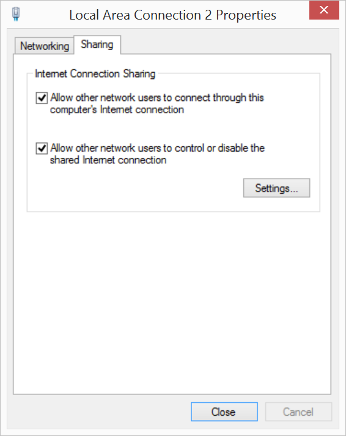
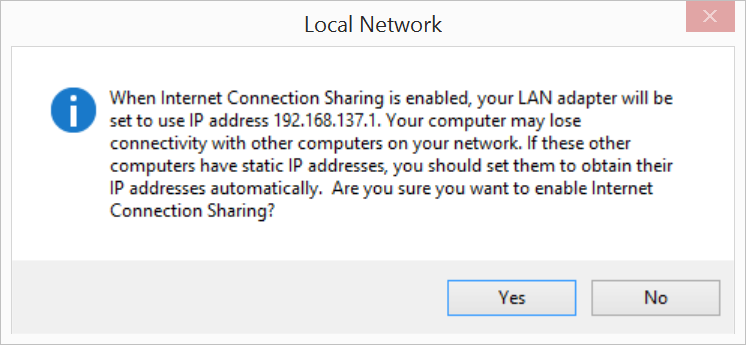

Share your computer’s WiFi connection (optional)
Turn on Internet Connection Sharing (ICS) to cut down on Wi-Fi traffic in a crowded room. Sharing your computer’s internet connection also means that you can log into networks that have HTML password pages and then share the connection with the Intel® Edison.
Internet sharing is an optional step but is highly recommended if you are at a hackathon.
-
Open your Network Connections again.
-
Right-click on the “Wi-Fi” network adapter entry, then select “Properties”.

-
Select the “Sharing” tab.
-
Check “Allow other network users to connect through this computer’s Internet connection” to enable Internet Connection Sharing (ICS).

-
Click “Ok”.
-
You will receive an alert about enabling ICS. Click “Yes” to continue.

Enabling ICS may have changed the IPv4 LAN settings you set in the previous section. Follow the steps in Add static IPv4 address to confirm that “Use the following IP address” is still set to “192.168.2.2”.
-
Unplug and replug the device mode micro-USB cable to reset the Ethernet over USB connection.
-
Use PuTTY to establish a serial connection to the Intel® Edison.
Don’t know how? Refer to Shell Access.
-
On your Intel® Edison, disconnect from any WiFi networks the board might be logged into using the wireless command line interface (
wpa_cli) command:wpa_cli disconnect -
Then use the
routecommand to add a default gateway. Use the same static IPv4 address you set in the Network Connections LAN settings in the previous section.route add default gw 192.168.2.2
You can now use the Intel® Edison as if it is connected to the internet on its own as long as you keep the device mode micro-USB cable plugged in.
Try pinging a network from PuTTY to make sure the Intel® Edison is connected to the internet through your computer’s network connection:
ping google.com
(Use the Ctrl+C keyboard command to exit the ping process.)
To re-enable WiFi on the Intel® Edison, use the configure_edison --wifi command as described in Connect Your Intel Edison to Wi-Fi.
Unable to ping anything from the Intel® Edison?
- Unplug and replug the device mode micro-USB cable to reset the Ethernet over USB connection.
- Turn your computer’s WiFi connections off, then back on.
- Restart your computer.
- Check that the IP address set in the IPv4 LAN settings is “192.168.2.2”